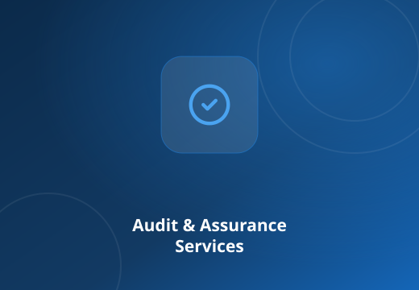
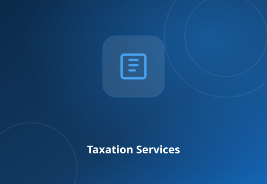
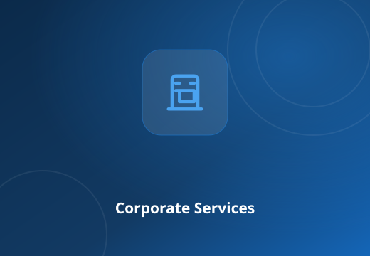
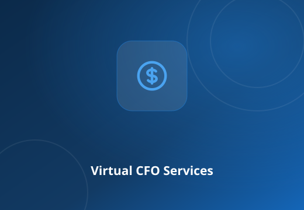
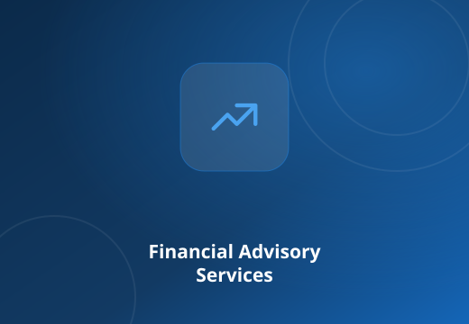
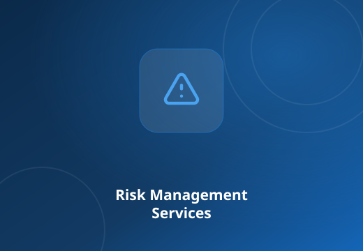
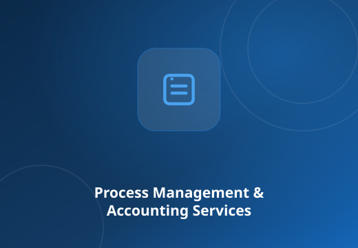
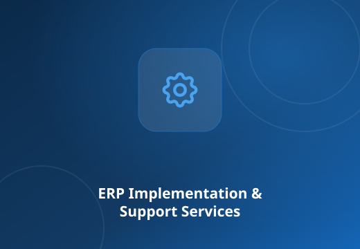
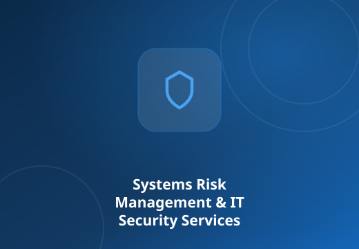

Audit & Assurance Services
Statutory, tax and risk-based internal audits delivered with a thorough, risk-focused approach.
Read moreJolly Stephen & Associates is a Chartered Accountant firm built on integrity, knowledge and experience — delivering audit, tax, advisory and Virtual CFO services to clients in India and abroad.

We, Jolly Stephen & Associates (“JSA”), are a Chartered Accountant firm built on values and beliefs powered by integrity, knowledge, expertise and experience — based in Kerala, India with clients in India and abroad.
Our firm represents a coalition of specialised skills geared to offer sound financial solutions and advice. Our team of professionals is equipped to meet the changing environment of business across different sectors.
We combine technical excellence with a genuine understanding of your business — so you get more than an opinion, you get a partner.
Built on values and beliefs powered by integrity, knowledge, expertise and experience — quality sits at the core of everything we do.
Led by CA Jolly Stephen, FCA & CPA, with more than two decades across audit, taxation, finance and advisory in India and abroad.
International exposure across the UAE, Bahrain and Qatar means adaptability to different business environments and cultures.
We use technology to make information gathering efficient and to drive audit efficiencies for your ultimate benefit.
Top-quality service coupled with personal attention to your specific needs, whatever your sector or scale.
We are committed to add value and optimise the benefits accruing to every client we serve.
A full spectrum of professional services designed to add value and optimise the benefits accruing to our clients.

Statutory, tax and risk-based internal audits delivered with a thorough, risk-focused approach.
Read more
Tax planning, compliance and representation across Income Tax, GST and international tax.
Read more
Company & LLP incorporation, secretarial compliance and company-law advisory.
Read more
Outsource your finance function to seasoned experts and focus on your core business.
Read more
Restructuring, due diligence, valuations, capital raising and turnaround strategy.
Read more
Identify, assess and control threats to your organisation’s capital and earnings.
Read more
End-to-end accounting, remote accounting (RAS) and payroll outsourcing.
Read more
ERP advisory, business-process transformation and technology architecture.
Read more
Identify information-security risks and take structured steps to mitigate them.
Read moreTalk to our team about audit, tax, advisory or Virtual CFO support today.
Representative feedback illustrating how we work. Add real client testimonials here once approved.
The JSA team brought real rigour to our statutory audit and flagged issues early — far less disruption for our management team.
Their Virtual CFO support freed us to focus on growth while they handled compliance, MIS and reporting month after month.
Deep knowledge of GST and income tax. Practical, responsive and always available when we needed representation.